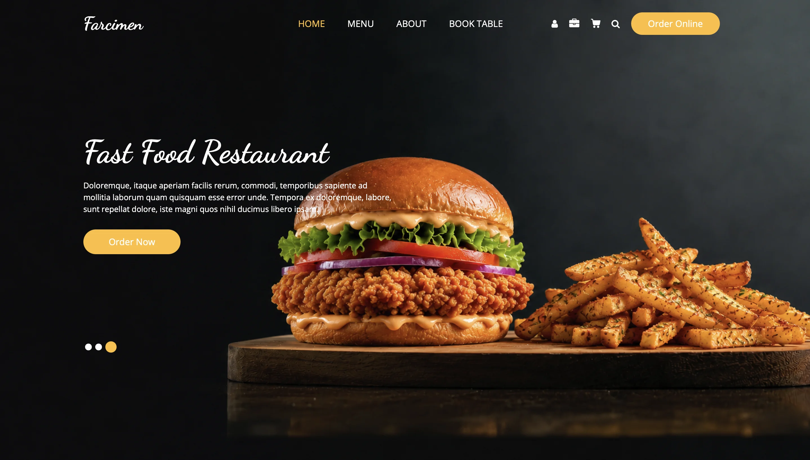
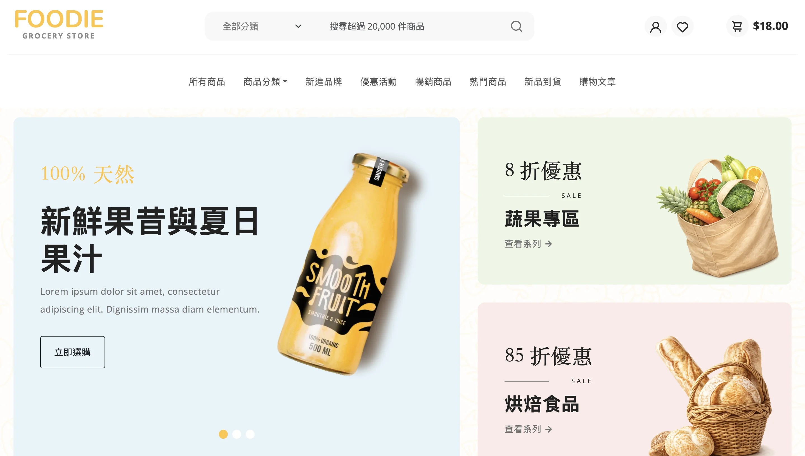
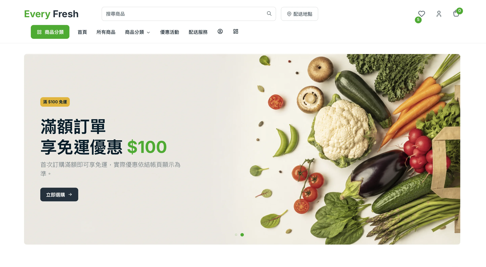

企業網站／品牌形象
La lumière Cafe
以品牌故事、菜單展示與顧客回饋為核心的精品咖啡網站。
從品牌形象、電商購物到管理介面，看看不同需求如何轉成可使用的網站。
以下為網站與介面展示 Demo。實際專案會依照品牌內容、功能需求與營運方式重新規劃，不直接套用展示模板。
以品牌故事、菜單展示與顧客回饋為核心的精品咖啡網站。

整合功能介紹、定價方案、FAQ 與使用者評價的 App 產品網站。

包含菜單分類、商品詳情、購物車與會員流程的餐飲購物平台展示。

整合餐廳形象、商品詳情與購物車互動的餐飲網站展示。

以分類、熱門商品、新品與內容展示為主的生鮮雜貨購物網站。

包含商品篩選、商品詳情、購物車與結帳流程的生鮮購物網站。